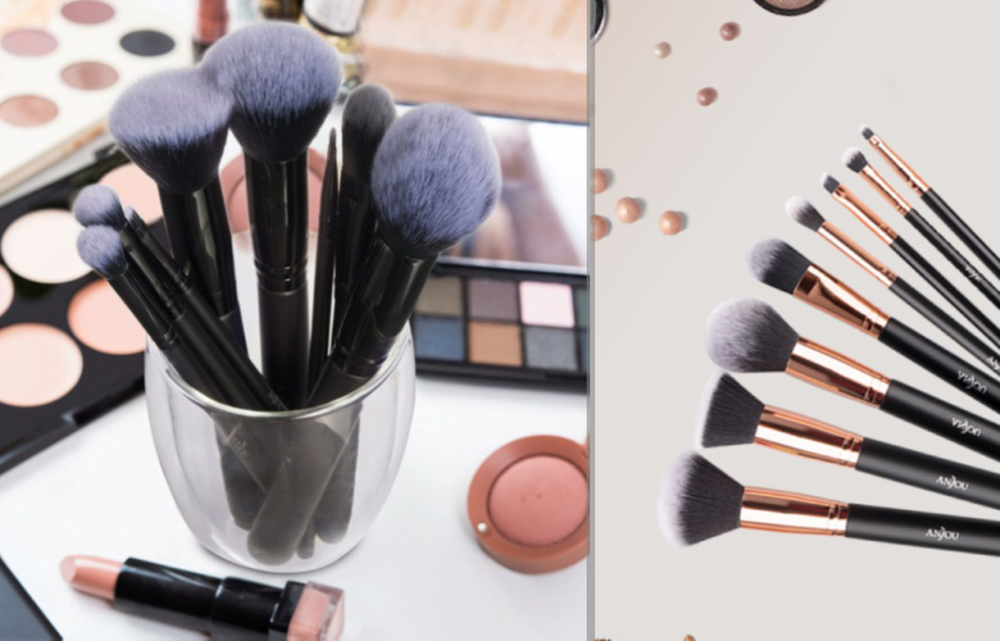

- En polvo: son más volátiles y no tienen tanta fijación, muy recomendadas para un maquillaje
ligero.
- En crema: su acabado también es en polvo, pero estas tienen más fijación y son
fáciles de aplicar.
- Líquidas: proporcionan un tono brillante, estas no son recomendables en caso de párpados
grasos, su fijación también es alta.
- Formato lápiz: el resultado es duradero, con la ventaja de que es más fácil de aplicar.

¿QUÉ PINCELES NECESITAS?
- Biselado: para trazar la raya con sombra oscura.
- Plano en punta: para aplicar con precisión en lagrimal o la parte externa del ojo.
- Redondo: para difuminar.
- Plano: para extender la sombra.

Página construida por Rebeca López